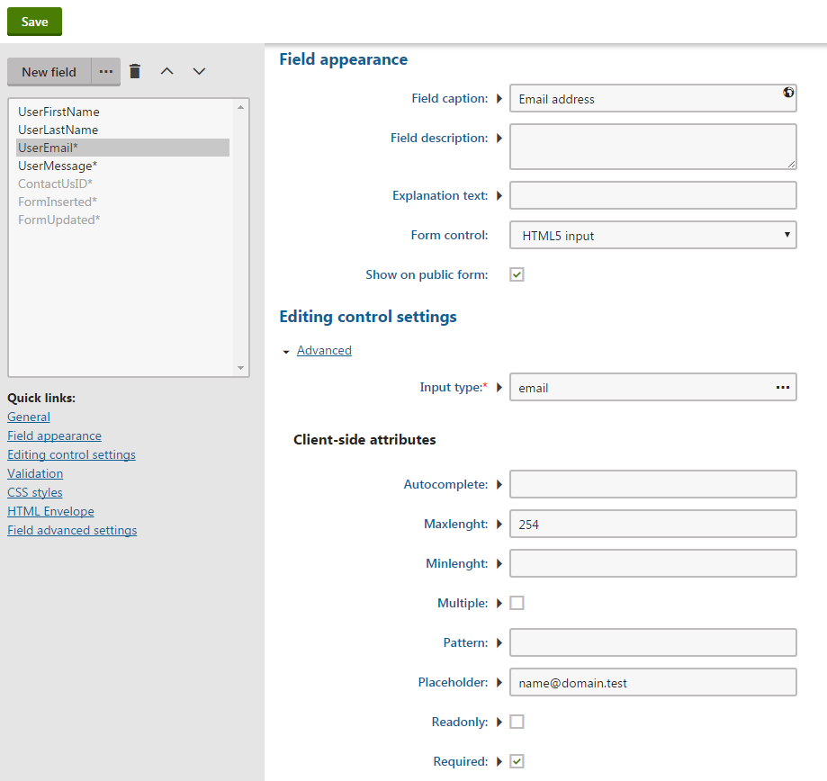

Working with HTML5 form inputs
The HTML5 input form control produces fields using the HTML <input> element and provides support for configuring the input type and other attributes.
Properly configured input elements allow you to define fields that offer users on handheld devices only the set of keys necessary for the field's expected value. For example, if a handheld user needs to enter a telephone number into a field, then their virtual keyboard only offers a telephone keypad instead of a full keyboard with characters that the user will never need to enter.
Using the HTML5 input form control
The HTML5 input form control supports most available HTML Input Types, with exceptions for types that are not compatible with Kentico forms. For example, the email, password, datetime-local and tel input types are all supported, but the submit and reset types are not.
To use the default HTML5 input form control, you need to select it as the form control of a field in the field editor, and then configure any required attributes.
To allow form editors to create HTML5 input fields without any advanced configuration (for example in the Form builder), you can create specialized versions of the HTML5 input form control with pre-defined settings. See Creating specialized HTML5 input form controls for more information about this scenario.
Not supported in administration interface forms
The HTML5 input form control is only intended for use in forms on the live website. Using the control within forms in the Kentico administration interface (for example in Page type or Web part property forms) is not supported.
Furthermore, when creating or editing form data on the Recorded data tab, HTML5 input fields have limited functionality (for example, client-side validation does not work).
Creating fields using the HTML5 input form control
To add a field using the HTML5 input form control to a form, you need to:
Open the Forms application.
Create a new form or edit an existing one.
Switch to the Fields tab and create a new field.
Specify the required field values and select HTML5 input as the Form control.
Select the Input type in the Editing control settings section (see HTML Input Types).
Configure any required client-side attributes for the input (see HTML input tag):
Common attributes for the selected input type are available in the Client-side attributes section.
After switching to Advanced mode, you can set any available attribute in the Advanced client-side attributes -> Custom attributes area. Use the {attribute name};{value} format, with each attribute on a new line.
Configuring server-side validation
The type and certain other attributes of the <input> element provide client-side validation for field values. For example, the maxlength attribute specifies the maximum number of allowed characters.
However, client-side validation can be bypassed and Kentico does not automatically ensure matching server-side validation. We strongly recommend that you configure server-side validation for each input field to match any assigned client-side attributes:
For most types of input restrictions, add Validation rules (under the Validation section of the field editor). You can define custom validation rules.
If you set the required attribute, also enable the Required setting of the field (under the General section of the field editor).
Save the field.
Repeat the process for any number of HTML5 input fields.

Configuring a field using the HTML 5 input form control
The form now contains the specified HTML5 input fields. Each <input> element is rendered with the assigned input type and attributes. You can continue by displaying the form on the live site.
Creating specialized HTML5 input form controls
You can use inheritance to create custom HTML5 input form controls that allow form editors to create specific types of input fields without any advanced configuration (for example in the Form builder). You predefine the input type and attribute values when creating the inherited controls.
Tip: You cannot define server-side validation rules for fields within the default configuration of inherited form controls. However, you can create a dedicated macro rule for each inherited HTML5 input form control, which users can easily select when creating fields of the given type.
Example – Creating a HTML5 email input form control
The following example demonstrates how to create a specialized form control for HTML5 email inputs. The example predefines the input type, maxlength and required attributes, but you can use the same approach for any other input configuration.
Open the Form controls application.
Click New form control.
Set the following options for the new form control:
Control source: Inherit from an existing
Display name: HTML5 email input
Type: Input
Inherit from: HTML5 input (select via the (more items...) option)
Click Save.
Set the following options on the General tab:
(optional) Thumbnail: Upload a thumbnail image for use in the Form builder
High priority: yes (enabled)
Use control for: Text
Show control in: Forms
Default data type: Text
Column size: 254
Click Save.
Switch to the Properties tab.
Set the Default value for the following properties (select the field in the list on the left, set the default value, and then click Save for each field):
Type: email
Maxlength: 254
Required: Yes
(optional) Disable the Display field in the editor option for all properties to hide the control's input type and attribute configuration on the Fields tab of forms (this has no effect on the Form builder).
To allow users to quickly add matching server-side validation for the email input, create a new validation rule:
Open the Macro rules application.
Switch to the Form validation tab and click New macro rule.
Fill in the rule properties:
Display name: HTML5 email input validation
User text: Email input is valid
Condition:
Value.Matches("^[a-zA-Z0-9.!#$%&'*+\-/=?\^_`{|}~]+@[a-z0-9-]+(\.[a-zA-Z0-9-]+)*$") && Value.Length <255
Click Save.
Form editors can now use the new form control and the matching validation rule to create email input fields in forms:
Open the Forms application.
Edit a form and select the Form builder tab.
Drag the HTML5 email input component onto the form.
Enable the Required flag for the field in the Properties panel.
Switch to the Validation panel and click Add validation rule.
Select the HTML5 email input validation rule and click Apply.
The form now contains a field using the specialized HTML input for email values. The form control generates an <input> element with the pre-defined input type and attributes, and the applied macro rule ensures corresponding server-side validation.